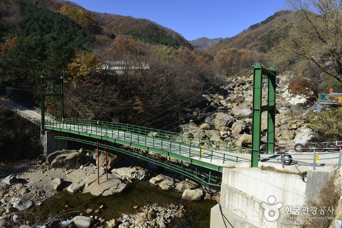
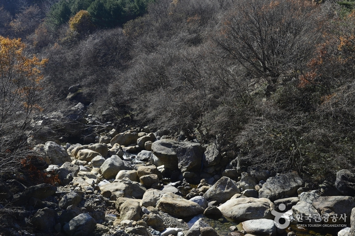
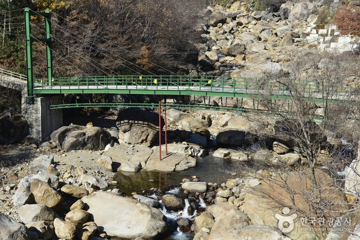
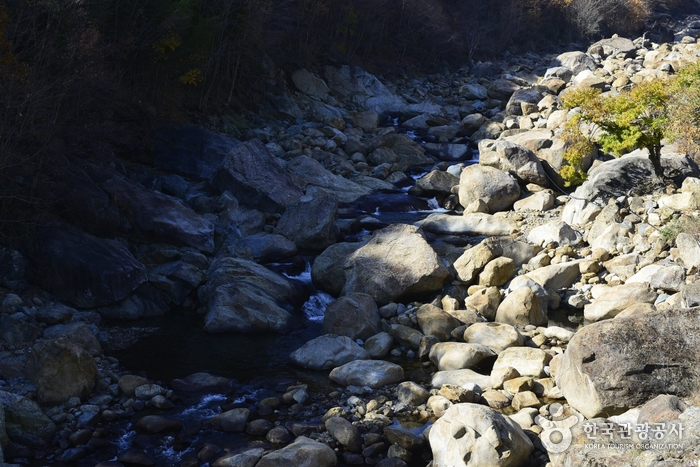

거림계곡
   
지역 : 경남 산청
설명 : 지리산 10경 중 네 번째로 가족 단위의 피서객이 많이 찾는 계곡.
웹사이트 링크 1:
https://korean.visitkorea.or.kr/detail/ms_detail.do?cotid=cc472d50-9270-4aa4-a460-2325a929261d
웹사이트 링크 2:
https://place.map.kakao.com/8191540
웹사이트 링크 3:
https://goo.gl/maps/g4j825iEXLBzfku38